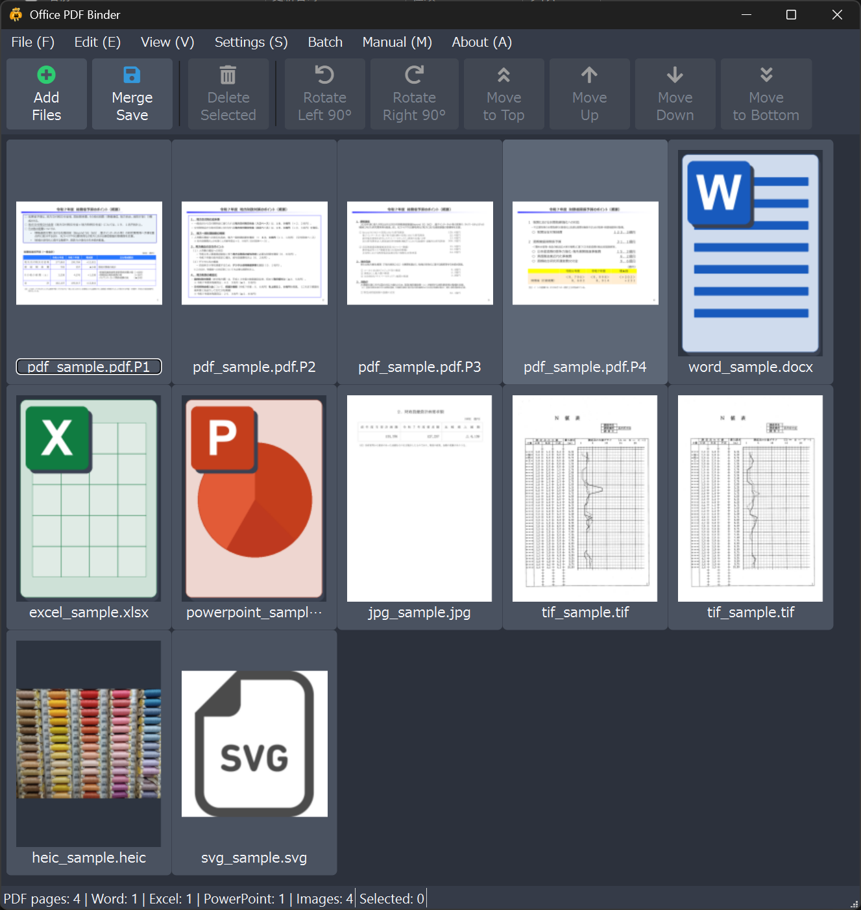
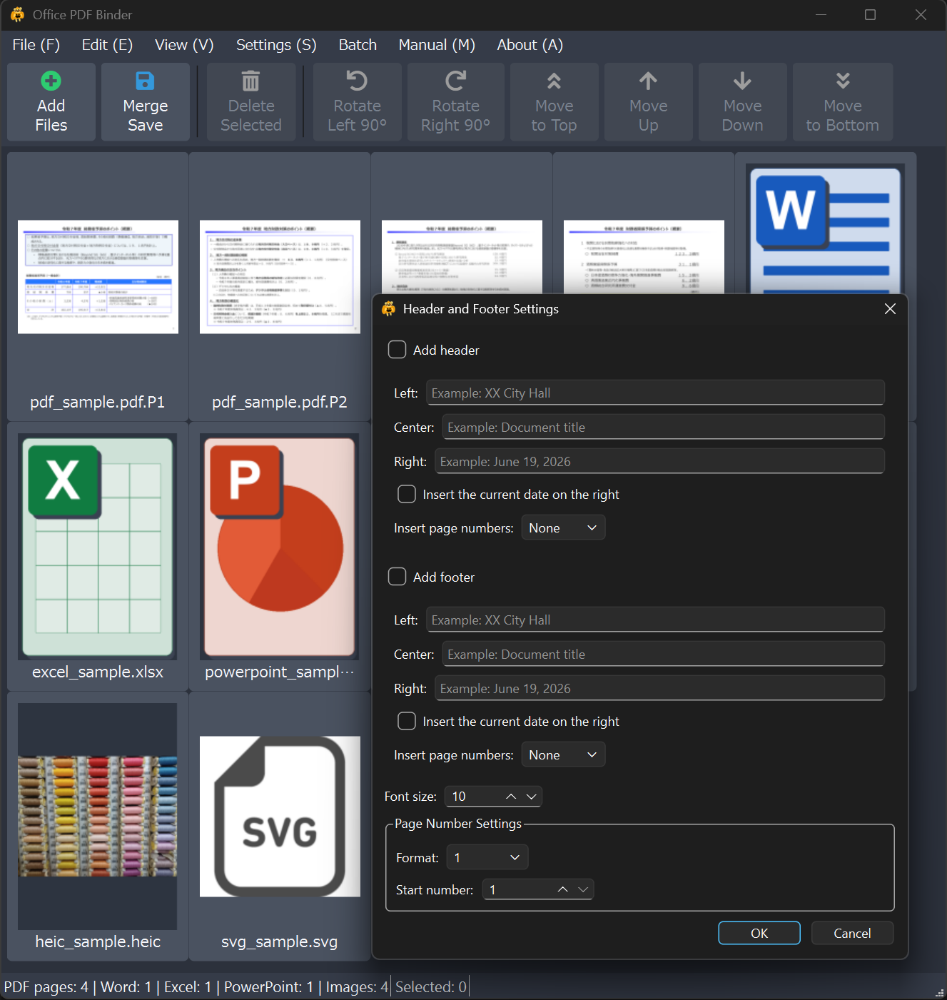

English | 日本語
Office PDF Binder is a Windows desktop application that combines PDF, Word, Excel, PowerPoint, and image files into a single PDF. You can organize, delete, and rotate individual PDF pages before saving the result.

Office files are converted through locally installed Microsoft Office or LibreOffice applications. Office PDF Binder does not upload documents to an online service. PDF files are loaded as individual pages. Word, Excel, and PowerPoint documents are added as files and converted to PDF when the combined PDF is saved.
Supported extensions:
.pdf / .docx / .doc / .docm / .xlsx / .xls / .xlsm / .pptx / .ppt / .pptm / .png / .jpg / .jpeg / .bmp / .webp / .tif / .tiff / .heic / .heif / .hif / .svg
Download the latest installer or portable ZIP from GitHub Releases.
The installer includes the application, this manual, license documents, and the corresponding source archive. The installer can be displayed in English or Japanese, and Office PDF Binder uses the language selected during setup.
The portable version automatically uses Japanese on a Japanese Windows system and English on other Windows language settings.
Ctrl+O, or drag supported files into the window.Delete to remove selected items and Ctrl+A to select all items.Office documents appear as a single item in the list. They are converted to PDF when the combined document is saved.
Select File > New to clear the current list, bookmarks, and page settings.
Ctrl while using the mouse wheel to zoom.Ctrl+0 to fit the thumbnails to the window.Select Settings > Header and Footer to configure content added when the PDF is saved.

Use Edit > Organize Pages > Insert Blank Page to insert an A4 portrait blank page. If a page is selected, the blank page is inserted after the selected page; otherwise it is added to the end.
Image files are added as single A4 pages. Landscape images use A4 landscape, and portrait or square images use A4 portrait. The image is centered on the page while preserving its aspect ratio.
Enable Settings > Do Not Enlarge Small Images to keep small images at or below their 96 dpi reference size. Images larger than the printable area are still reduced to fit the A4 page.
Select File > Save As or press Ctrl+S. Choose an output path, and Office
PDF Binder combines the current list into one PDF.
After saving, the PDF opens in the default PDF viewer. The application then asks whether to clear the current list.
Select Batch > Create PDFs by Subfolder to create one PDF for each subfolder directly under a selected parent folder.
The same batch operation can be run from PowerShell or a BAT file.
$cliArgs = @(
"--batch-subfolders"
'--input-root="C:\Work\Input"'
'--output-root="C:\Work\Output"'
)
$process = Start-Process `
-FilePath ".\OfficePDFBinder_Main.exe" `
-ArgumentList $cliArgs `
-Wait -PassThru -NoNewWindow
$process.ExitCode
The PDFs and UTF-8 BOM CSV log are written to the specified output folder. CLI
mode uses its command-line options and fixed defaults instead of saved GUI
settings. Start-Process -Wait -PassThru ensures that PowerShell waits for the
GUI-format executable and receives its exit code.
Available options:
--auto-bookmarks / --no-auto-bookmarks
--show-bookmarks-on-open / --no-show-bookmarks-on-open
--remove-pdf-annotations
--suppress-office-markup
--disable-image-upscaling
--overwrite
Exit codes are 0 only when every subfolder succeeds, 1 when any result is
Warning, Skipped, or Error, 2 for invalid arguments, 3 when the input
folder is missing, 4 when there are no subfolders, 5 when the log cannot
be written, and 9 for an unexpected error.
| Action | Shortcut |
|---|---|
| New | Ctrl+N |
| Add Files | Ctrl+O |
| Combine and Save | Ctrl+S |
| Exit | Ctrl+Q |
| Select All | Ctrl+A |
| Delete Selected | Delete |
| Zoom In / Out | Ctrl + + / -, or Ctrl + mouse wheel |
| Fit to Window | Ctrl+0 |
| Header and Footer | Ctrl+H |
| Undo / Redo | Ctrl+Z / Ctrl+Y |
Image export supports PDF pages only. Word, Excel, and PowerPoint items are not included.
The portable package contains OfficePDFBinder.portable. Keep this
marker file next to the executable.
In the portable edition, Office PDF Binder:
Microsoft Office, Windows, and Qt may still use their own system services, temporary folders, caches, or registry settings.
The verified development and test environment uses Python 3.13.11.
Windows builds use the Visual Studio C++ Clang tools (clang-cl).
Install runtime and development dependencies with:
python -m pip install -r requirements.txt
python -m pip install -r requirements-dev.txt
Run automated tests with:
python -m pytest
Before distributing a build, verify executable startup, Office conversion, CLI behavior, and installation separately.
Build operations use the single build.ps1 entry point. To regenerate only
the manual and installer from the existing dist, run:
.\build.ps1 -Mode Package
After application code changes, reuse Nuitka intermediate files with:
.\build.ps1 -Mode Fast
For the final public release, run a clean build:
.\build.ps1 -Mode Release
Fast and Release create the distribution directory, portable package, and
installer. Package skips Nuitka and regenerates only the installer from the
existing distribution directory.
The Nuitka application is compiled once. The same distribution directory is used for the installer and the marker-based portable ZIP.
Supporting build scripts are stored in scripts/, and the Inno Setup definition
is stored in packaging/. Run build.ps1 from the project root.
LICENSE.txt)NOTICE.txtsource.zip in both installer and portable packagesCopyright (C) 2026 Takeshi Kashiwagi